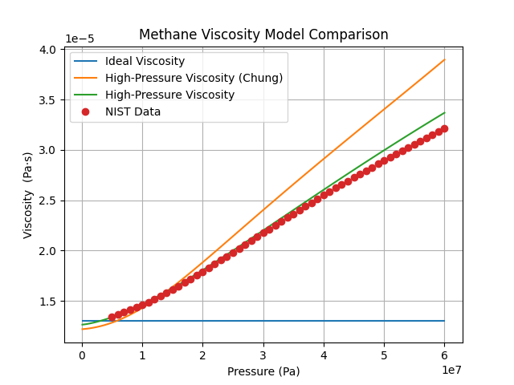
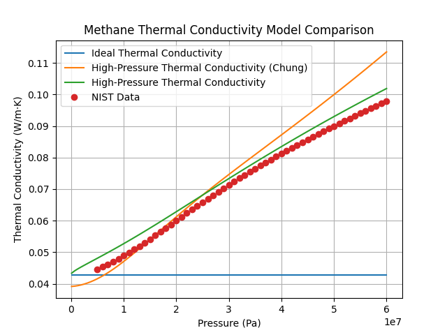

Note
Go to the end to download the full example code.
High-Pressure transport using two models#
Two high-pressure gas transport models are available in Cantera: the high-pressure
and the high-pressure-Chung models. These models utilize critical fluid properties
and other fluid-specific parameters to calculate transport properties at high pressures.
These models are useful for fluids that are supercritical where ideal gas assumptions
do not yield accurate results.
Requires: cantera >= 3.2.0
import matplotlib.pyplot as plt
import numpy as np
import cantera as ct
# NIST data for methane at 350 K.
nist_pressures = np.array([
5., 6., 7., 8., 9., 10., 11., 12., 13., 14., 15., 16., 17., 18., 19., 20., 21.,
22., 23., 24., 25., 26., 27., 28., 29., 30., 31., 32., 33., 34., 35., 36., 37., 38.,
39., 40., 41., 42., 43., 44., 45., 46., 47., 48., 49., 50., 51., 52., 53., 54., 55.,
56., 57., 58., 59., 60.])
nist_viscosities = np.array([
1.3460e-05, 1.3660e-05, 1.3875e-05, 1.4106e-05, 1.4352e-05, 1.4613e-05, 1.4889e-05,
1.5179e-05, 1.5482e-05, 1.5798e-05, 1.6125e-05, 1.6463e-05, 1.6811e-05, 1.7167e-05,
1.7531e-05, 1.7901e-05, 1.8276e-05, 1.8656e-05, 1.9040e-05, 1.9426e-05, 1.9813e-05,
2.0202e-05, 2.0591e-05, 2.0980e-05, 2.1368e-05, 2.1755e-05, 2.2140e-05, 2.2523e-05,
2.2904e-05, 2.3283e-05, 2.3659e-05, 2.4032e-05, 2.4403e-05, 2.4771e-05, 2.5135e-05,
2.5497e-05, 2.5855e-05, 2.6211e-05, 2.6563e-05, 2.6913e-05, 2.7259e-05, 2.7603e-05,
2.7944e-05, 2.8281e-05, 2.8616e-05, 2.8949e-05, 2.9278e-05, 2.9605e-05, 2.9929e-05,
3.0251e-05, 3.0571e-05, 3.0888e-05, 3.1202e-05, 3.1514e-05, 3.1824e-05, 3.2132e-05])
nist_thermal_conductivities = np.array([
0.044665, 0.045419, 0.046217, 0.047063, 0.047954, 0.048891, 0.04987, 0.050891,
0.051949, 0.05304, 0.05416, 0.055304, 0.056466, 0.057641, 0.058824, 0.06001,
0.061194, 0.062374, 0.063546, 0.064707, 0.065855, 0.066988, 0.068106, 0.069208,
0.070293, 0.071362, 0.072415, 0.073451, 0.074472, 0.075477, 0.076469, 0.077446,
0.07841, 0.079361, 0.0803, 0.081227, 0.082143, 0.083048, 0.083944, 0.084829,
0.085705, 0.086573, 0.087431, 0.088282, 0.089124, 0.089959, 0.090787, 0.091607,
0.092421, 0.093228, 0.094029, 0.094824, 0.095612, 0.096395, 0.097172, 0.097944])
Create the gas object for the methane-CO₂ system using reference state thermo from
the GRI 3.0 mechanism, species critical properties from critical-properties.yaml,
and the Peng-Robinson equation of state.
phasedef = """
phases:
- name: methane_co2
species:
- gri30.yaml/species: [CH4, CO2]
thermo: Peng-Robinson
transport: mixture-averaged
state: {T: 300, P: 1 atm}
"""
gas = ct.Solution(yaml=phasedef)
# Plot the difference between the high-pressure viscosity and thermal conductivity
# models and the ideal gas model for methane.
pressures = np.linspace(101325, 6e7, 100)
# Collect ideal viscosities and thermal conductivities
ideal_viscosities = []
ideal_thermal_conductivities = []
for pressure in pressures:
gas.TPX = 350, pressure, 'CH4:1.0'
ideal_viscosities.append(gas.viscosity)
ideal_thermal_conductivities.append(gas.thermal_conductivity)
# Collect real viscosities using the high-pressure-Chung
gas.transport_model = 'high-pressure-Chung'
real_viscosities_1 = []
real_thermal_conductivities_1 = []
for pressure in pressures:
gas.TPX = 350, pressure, 'CH4:1.0'
real_viscosities_1.append(gas.viscosity)
real_thermal_conductivities_1.append(gas.thermal_conductivity)
# Collect real viscosities using the high-pressure model
gas.transport_model = 'high-pressure'
real_viscosities_2 = []
real_thermal_conductivities_2 = []
for pressure in pressures:
gas.TPX = 350, pressure, 'CH4:1.0'
real_viscosities_2.append(gas.viscosity)
real_thermal_conductivities_2.append(gas.thermal_conductivity)
Plot the data#
mpa_to_pa = 1e6 # conversion factor from MPa to Pa
fig, ax = plt.subplots()
ax.plot(pressures, ideal_viscosities, label='Ideal Viscosity')
ax.plot(pressures, real_viscosities_1, label='High-Pressure Viscosity (Chung)')
ax.plot(pressures, real_viscosities_2, label='High-Pressure Viscosity')
ax.plot(nist_pressures*mpa_to_pa, nist_viscosities, 'o', label='NIST Data')
ax.set(xlabel='Pressure (Pa)', ylabel ='Viscosity (Pa·s)',
title='Methane Viscosity Model Comparison')
ax.legend()
ax.grid(True)
plt.show()

fig, ax = plt.subplots()
ax.plot(pressures, ideal_thermal_conductivities,
label='Ideal Thermal Conductivity')
ax.plot(pressures, real_thermal_conductivities_1,
label='High-Pressure Thermal Conductivity (Chung)')
ax.plot(pressures, real_thermal_conductivities_2,
label='High-Pressure Thermal Conductivity')
ax.plot(nist_pressures*mpa_to_pa, nist_thermal_conductivities, 'o', label='NIST Data')
ax.set(xlabel='Pressure (Pa)', ylabel ='Thermal Conductivity (W/m·K)',
title='Methane Thermal Conductivity Model Comparison')
ax.legend()
ax.grid(True)
plt.show()

Total running time of the script: (0 minutes 0.370 seconds)